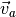
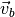
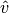
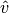
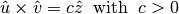
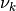
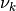

from IPython.core.display import HTML
def css_styling():
styles = open("../styles/custom.css", "r").read()
return HTML(styles)
css_styling()
from pylayers.util.cone import *
from pylayers.util.geomutil import *
from pylayers.util.plotutil import *
The class Cone¶
The `Cone <http://pylayers.github.io/pylayers/modules/pylayers.util.cone.html>`__ class implements different methods for handling planar cones.
A planar cone is defined as : + an apex + two vectors  and  not necessarily normalized.
Let create a cone.
va = np.array([2,1])
vb = np.array([1,3])
C = Cone(va,vb,apex=np.array([2,-3]))
From those parameters the Cone __init__ constructs 2 unitary vectors
 and  such that :
and  such that :
- 
This can be interpreted as applying an anticlockwise rotation from
to .
print "Unitary vector u",C.u
print "Unitary vector v",C.v
print "dot(u,v)",C.dot
print "cross(u,v)",C.cross
Unitary vector u [ 0.89442719 0.4472136 ]
Unitary vector v [ 0.31622777 0.9486833 ]
dot(u,v) 0.707106781187
cross(u,v) 0.707106781187
Is a point in the cone : belong_point()¶
p = 4*np.random.randn(2,6000)
b = C.belong_point(p)
nb = np.array(map(lambda x: not x,b))
pr = p[:,b]
pb = p[:,nb]
fig,ax = C.show()
ax.plot(pr[0,:],pr[1,:],'.r')
ax.plot(pb[0,:],pb[1,:],'.b')
plt.axis('equal')
plt.title('belong_cone method')
xlabel('x')
ylabel('y')
#plt.axis('off')
<matplotlib.text.Text at 0x7fdd131bb150>
Creating a Cone from 2 segments from2segs()¶
seg0 = np.array([[2,3],[0,0]])
seg1 = np.array([[0,1],[4,4]])
Cs=Cone()
Cs.from2segs(seg0,seg1)
Cs.apex
array([ 1.5, 2. ])
Cs.seg1-seg1
array([[0, 0],
[0, 0]])
Cs.show()
(<matplotlib.figure.Figure at 0x7fdd1381f710>,
<matplotlib.axes.AxesSubplot at 0x7fdd1381fc10>)
b=Cs.belong_point(p)
pta = 10*sp.randn(2,1000)
phe = 10*sp.randn(2,1000)
nb = np.array(map(lambda x: not x,b))
pr = p[:,b]
pb = p[:,nb]
fig,ax = Cs.show()
#displot(pta[:,bs],phe[:,bs],color='k')
ax.plot(pr[0,:],pr[1,:],'.r')
ax.plot(pb[0,:],pb[1,:],'.b')
plt.axis('equal')
#plt.axis('off')
(-15.0, 20.0, -20.0, 20.0)
Cs.seg1
array([[0, 1],
[4, 4]])
bi=Cs.belong_point2(p)
%timeit b=Cs.belong_point(p)
10000 loops, best of 3: 103 µs per loop
#nb = np.array(map(lambda x: not x,bo))
pr = p[:,bi]
#pb = p[:,bo2]
fig,ax = Cs.show()
ax.plot(pr[0,:],pr[1,:],'.r')
#ax.plot(pb[0,:],pb[1,:],'.b')
plt.axis('equal')
#plt.axis('off')
(-8.0, 10.0, -15.0, 20.0)
The adressed problem consists in determining whether a segment lies in the cone or not. The condition is satisfied if not all segments termination are outside the cone on the same side of the cone. This is implemented in the method Cone.outside
b1,b2=Cs.outside_point(p)
pr = p[:,b1]
pb = p[:,b2]
fig,ax = Cs.show()
ax.plot(pr[0,:],pr[1,:],'.r')
ax.plot(pb[0,:],pb[1,:],'.b')
plt.axis('equal')
#plt.axis('off')
(-15.0, 20.0, -20.0, 20.0)
Un cone est un objet qui va servir à construire les objets Beams. Un Beam est un Cone qui englobe les segments d’une Signature. Une signature et un point donne un Beam. A un Beam est associé un Cone dont l’apex est une ancre virtuelle.
pta = 10*sp.randn(2,400)
phe = 10*sp.randn(2,400)
displot(pta,phe)
(<matplotlib.figure.Figure at 0x7fdd1315f690>,
<matplotlib.axes.AxesSubplot at 0x7fdd12f99090>)
Cs.seg0
array([[2, 3],
[0, 0]])
typ, proba = Cs.belong_seg(pta,phe)
fig,ax = Cs.show()
bs1 = np.where(typ==1)[0]
bs2 = np.where(typ==2)[0]
bs3 = np.where(typ==3)[0]
bs4 = np.where(typ==4)[0]
bs5 = np.where(typ==5)[0]
bs6 = np.where(typ==6)[0]
displot(pta[:,bs1],phe[:,bs1],color='g')
displot(pta[:,bs2],phe[:,bs2],color='b')
displot(pta[:,bs3],phe[:,bs3],color='b')
displot(pta[:,bs4],phe[:,bs4],color='r')
displot(pta[:,bs5],phe[:,bs5],color='r')
#displot(pta[:,bs6],phe[:,bs6],color='m')
#displot(pta[:,bs],phe[:,bs],color='blue')
(<matplotlib.figure.Figure at 0x7fdd12f89c50>,
<matplotlib.axes.AxesSubplot at 0x7fdd12ffa550>)
There is different way to create a Cone either from 2 segments from2segs or from one point and one segment fromptseg. This second method is used when the field is going from a diffraction point to a segment.
Conditional Graph¶
 is a conditional graph meaning that the edge
indicates which is the list of authorized next edge for the output. A
ray being a sequence  of nodes of .
The cone angular sector represents the whole set and each intercepting
segment, is a part or this whole set. This can be interpreted as a
probability. This means that the research of rays could be done
stochastically in a very efficient manner. This is not fully implemented
yet.
is a conditional graph meaning that the edge
indicates which is the list of authorized next edge for the output. A
ray being a sequence  of nodes of .
The cone angular sector represents the whole set and each intercepting
segment, is a part or this whole set. This can be interpreted as a
probability. This means that the research of rays could be done
stochastically in a very efficient manner. This is not fully implemented
yet.
Cb = Cone()
Cb.u
array([ 1., 0.])
seg = np.array([[1,2],[2,2]])
pt = np.array([0,0])
Cb.fromptseg(pt,seg)
typ,proba = Cb.belong_seg(pta,phe)
bs = np.where(typ>0)[0]
Cb.seg1
array([[1, 2],
[2, 2]])
Cb.show()
displot(pta[:,bs],phe[:,bs],color='k')
(<matplotlib.figure.Figure at 0x7fdd1142a190>,
<matplotlib.axes.AxesSubplot at 0x7fdd20a25e90>)
Benchmark normalizing a vector¶
a = np.array([5,6])
%timeit a/np.sqrt(np.dot(a,a))
100000 loops, best of 3: 5.02 µs per loop
%timeit a/sp.linalg.norm(a)
100000 loops, best of 3: 10.7 µs per loop
%timeit a/np.sqrt(np.sum(a*a,axis=0))
100000 loops, best of 3: 9.17 µs per loop
Debug¶
This a case which where segments seg0 and seg1 are orthogonal
seg0 = array([[-25.768, -25.822],
[ 4.28 , 9.925]])
seg1 = array([[-26.848, -26.805],
[ 5.415, 4.515]])
cn = Cone()
cn.from2segs(seg0,seg1)
pta =array([[-27.836, -27.833, -27.833, -27.817, -26.848, -27.774, -26.952,
-28.062],
[ 10.926, 10.686, 10.686, 8.956, 5.415, 4.506, 10.934, 8.954]])
phe = array([[-27.835, -27.835, -28.078, -27.774, -26.882, -26.805, -27.836,
-28.078],
[ 10.891, 10.891, 10.683, 4.506, 8.965, 4.515, 10.926,
10.683]])
typ,proba = cn.belong_seg(pta,phe)
bn = np.where(typ==0)[0]
proba
array([ 0. , 0. , 0. , 0.36658801, 0. ,
0.36658801, 0. , 0. ])
cn.show()
displot(pta[:,bn],phe[:,bn])
(<matplotlib.figure.Figure at 0x7fdd114b7810>,
<matplotlib.axes.AxesSubplot at 0x7fdd12f6da90>)
cn.apex
array([-26.67458396, 5.23275258])
cn.seg1
array([[-26.805, -26.848],
[ 4.515, 5.415]])
pta.T
array([[-27.836, 10.926],
[-27.833, 10.686],
[-27.833, 10.686],
[-27.817, 8.956],
[-26.848, 5.415],
[-27.774, 4.506],
[-26.952, 10.934],
[-28.062, 8.954]])
phe.T
array([[-27.835, 10.891],
[-27.835, 10.891],
[-28.078, 10.683],
[-27.774, 4.506],
[-26.882, 8.965],
[-26.805, 4.515],
[-27.836, 10.926],
[-28.078, 10.683]])
pta1=pta[:,5].reshape(2,1)
phe1=phe[:,5].reshape(2,1)
cn.show()
displot(pta1,phe1)
(<matplotlib.figure.Figure at 0x7fdd13004250>,
<matplotlib.axes.AxesSubplot at 0x7fdd112bca50>)
pta1
array([[-27.774],
[ 4.506]])
phe1
array([[-26.805],
[ 4.515]])
b = cn.belong_seg(pta1,phe1)
geomutil.mirror¶
p = np.random.randn(2,10000)
pa = np.array([-1,1]).reshape(2,1)
pb = np.array([-1,3]).reshape(2,1)
M = geu.mirror(p,pa,pb)
M
array([[-3.14982613, -1.70314403, -2.15545924, ..., -3.66050496,
-3.04438101, -2.44244337],
[ 0.1325281 , -0.58860675, -0.08353195, ..., -0.32841096,
0.56330277, -0.45096549]])
figsize(20,20)
displot(pa,pb)
plot(p[0,:],p[1,:],'or',alpha=0.2)
plot(M[0,:],M[1,:],'ob',alpha=0.2)
[<matplotlib.lines.Line2D at 0x7fdd11192590>]
pa=np.array([0,0]).reshape(2,1)
pb=np.array([1,0]).reshape(2,1)
pc=np.array([1,0]).reshape(2,1)
geu.isaligned(pa,pb,pc)
array([ True], dtype=bool)
Geometric probability¶
The idea is to add an information of the fraction of the angular sector which is subtended by the intercepted segment.
a = np.array([2,1])
b = np.array([1,3])
C = Cone(a,b,apex=np.array([2,-3]))
import scipy as sp
pta = np.array([2,-1]).reshape(2,1)
phe = np.array([5.99,-1]).reshape(2,1)
pta = 10*sp.randn(2,1000)
phe = 10*sp.randn(2,1000)
typ,proba = C.belong_seg(pta,phe)
u0 = np.where(typ==0)[0]
u1 = np.where(typ==1)[0]
u2 = np.where(typ==2)[0]
u3 = np.where(typ==3)[0]
u4 = np.where(typ==4)[0]
u5 = np.where(typ==5)[0]
u6 = np.where(typ==6)[0]
us = np.where( ((proba<0.1) & (proba>0)) ) [0]
C.show()
#col=['r','g','b','m']
try:
displot(pta[:,us],phe[:,us],color='k')
except:
pass
C.show()
#col=['r','g','b','m']
try:
displot(pta[:,u1],phe[:,u1],color='r')
except:
pass
print proba[u1]
[ 1. 1. 1. 1. 1. 1. 1. 1. 1. 1. 1. 1. 1. 1. 1. 1. 1. 1.
1. 1. 1. 1. 1. 1. 1. 1. 1. 1. 1. 1. 1. 1. 1. 1. 1. 1.
1. 1. 1. 1. 1. 1. 1. 1. 1. 1. 1. 1. 1. 1. 1. 1. 1. 1.
1. 1. 1. 1. 1. 1. 1. 1. 1. 1. 1. 1. 1. 1. 1. 1.]
C.show()
try:
displot(pta[:,u2],phe[:,u2],color='g')
except:
pass
print(proba[u2])
[ 0.01595383 0.20853493 0.16270922 0.67682437 0.25094575 0.65430395
0.38054079 0.05819736 0.65070121 0.44711885 0.14449714 0.93895135
0.76452284 0.81505421 0.5228525 0.21044162 0.19170093 0.08583838
0.7930226 0.59950852 0.6044619 0.76683796 0.50334732 0.14642156
0.53695567 0.64944684 0.48164823 0.32379581 0.04102593 0.41327271
0.66328808 0.44656266 0.52096101 0.99336419 0.45249353]
C.show()
try:
displot(pta[:,u3],phe[:,u3],color='b')
except:
pass
print(proba[u3])
[ 0.50811604 0.54216416 0.09200085 0.09538675 0.56183513 0.24506377
0.49390972 0.47864877 0.46098 0.55426894 0.71363893 0.61054289
0.61538553 0.36069338 0.30402059 0.16022635 0.39796474 0.7026786
0.68156896 0.30630409 0.32182377 0.75955318 0.98633744 0.63593433
0.1942956 0.95099856 0.02630538 0.84815702 0.55291478 0.55484274
0.81245148 0.43951992 0.66188062 0.90786209 0.16843639 0.33305348
0.86592537 0.54656774 0.03408855]
C.show()
try:
displot(pta[:,u4],phe[:,u4],color='m')
except:
pass
print(proba[u4])
[ 0.36947478 0.83270738 0.65399017 0.24624756 0.76102651 0.50346752
0.03398412 0.74576811]
C.show()
try:
displot(pta[:,u5],phe[:,u5],color='k')
except:
pass
C.show()
try:
displot(pta[:,u6],phe[:,u6],color='k')
except:
pass